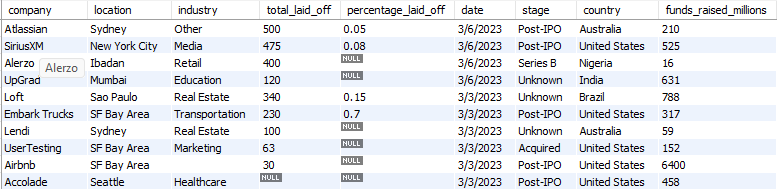
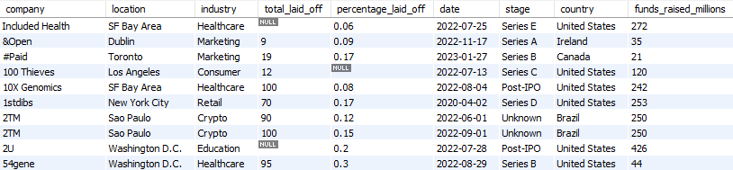

Projects
1. Sales Data Analysis Dashboard
Microsoft Excel | Personal Project | 2026
- Cleaned and structured raw sales dataset for analysis.
- Built an interactive dashboard using Pivot Tables and Charts.
- Used XLOOKUP & IFERROR to automate data handling and reduce manual.
- Analyzed sales data to identify key insight
- Presented insights in a clear dashboard to support business decision-making.
2. Data Cleaning using MySQL
MySQL| Personal Project | 2026

- Cleaned a real-world layoffs dataset by removing duplicates, handling missing values, and standardizing inconsistent records.
- Utilized advanced SQL features including Window Functions, CTEs, CASE statements, and date/string functions.
- Improved data integrity and prepared the dataset for reliable exploratory data analysis and reporting.
- Demonstrated strong SQL data cleaning, transformation, and data quality management skills
